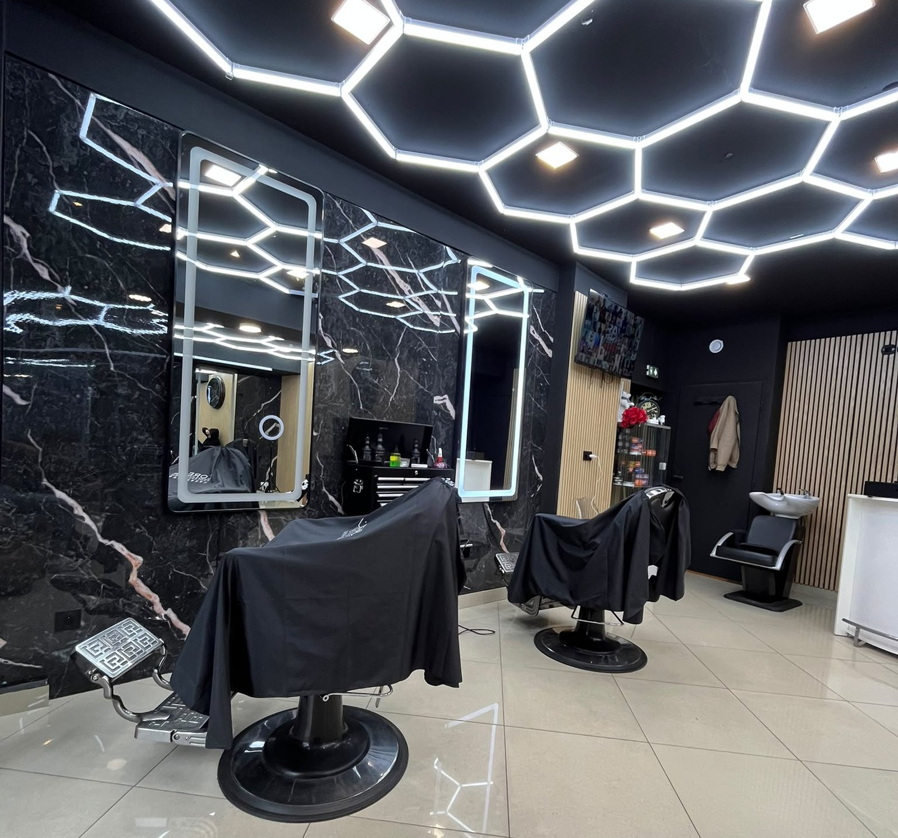

Salon de coiffure & barbier — Joigny (89)
Coiffeur homme & femme
à Joigny
Un écrin contemporain de marbre, de chêne et de lumière. Coupe, barbe, couleur et soins, pensés pour vous — au cœur de l'Yonne.
Le salon
Une parenthèse, loin du bruit
Chez LA Pause, on a voulu un lieu à part : plafond nid d'abeille baigné de néon, marbre veiné, bois chaud au mur. L'adresse où l'on prend le temps de bien faire les choses, pour une coupe homme nette comme pour une couleur femme sur-mesure.
Nos coiffeurs vous conseillent selon votre style, votre nature de cheveu et votre quotidien. Produits professionnels, hygiène irréprochable, et ce petit moment pour soi qui donne son nom au salon.
Conseil sur-mesure
Un diagnostic avant chaque prestation.
Produits premium
Des marques pro pour homme et femme.
Cadre d'exception
Marbre, bois & lumière hexagonale.

Prestations
Coupe, barbe, couleur & soins
Pour homme, femme et enfant. Quelques repères — la carte complète détaille chaque prestation.
Galerie
L'ambiance du salon
Bienvenue dans un décor noir et or, pensé dans le moindre détail.
Avis clients
Ils sont passés faire une pause
★★★★★« Accueil au top et un cadre magnifique. Mon dégradé n'a jamais été aussi net. Je ne vais plus ailleurs. »
— Karim B., Joigny
★★★★★« Un vrai conseil couleur avant mon balayage, résultat naturel et lumineux. Salon classe et très propre. »
— Laura M., Migennes
★★★★★« Rasage traditionnel à la serviette chaude, un vrai moment. On se sent chouchouté du début à la fin. »
— Thomas R., Sens
Prêt pour votre pause ?
Offrez-vous la bonne coupe
Réservez votre créneau en quelques secondes, ou passez directement au salon. On s'occupe du reste.